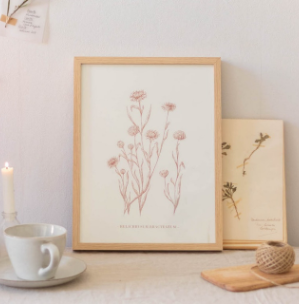

• Xou •
retourC’est la touche déco vintage par excellence ! Nous avons délicatement séché des chutes de Mimosa pour les associer à de petites feuilles de palmier et du miscanthus dans des soliflores au parfum d’antan faits de verre recyclé.
Bergamotte | 57,80€
